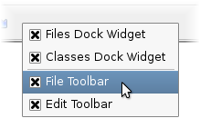

| Home · All Classes · Main Classes · Grouped Classes · Modules · Functions |
The QMainWindow class provides a main application window. More...
#include <QMainWindow>
Inherits QWidget.
The QMainWindow class provides a main application window.
QMainWindow provides a main application window, with a menu bar, tool bars, dock widgets and a status bar around a large central widget, such as a text edit, drawing canvas or QWorkspace (for MDI applications).
Note that QMainWindow comes with its own customized layout and that setting a layout on a QMainWindow, or creating a layout with a QMainWindow as a parent is considered an error. You should set your own layout on the central widget instead.
Topics:
The saveState() and restoreState() functions provide a means to save and restore the layout of the QToolBars and QDockWidgets in the QMainWindow. These functions work by storing the objectName of each QToolBar and QDockWidget together with information about placement, size, etc.
QMainWindow uses separators to separate QDockWidgets from each other and the central widget. These separators let the user control the size of QDockWidgets by dragging the boundary between them.
A QDockWidget can be as large or as small as the user wishes, between the minimumSizeHint() (or minimumSize()) and maximumSize() of the QDockWidget. When a QDockWidget reaches its minimum size, space will be taken from other QDockWidgets in the direction of the user's drag, if possible. Once all QDockWidgets have reached their minimum sizes, further dragging does nothing. When a QDockWidget reaches its maximium size, space will be given to other QDockWidgets in the opposite direction of the user's drag, if possible. Once all QDockWidgets have reached their minimum size, futher dragging does nothing.
QDockWidget displays a title bar to let the user drag the dock widget to a new location. A QDockWidget can be moved to any location provided enough space is available. (QMainWindow won't resize itself to a larger size in an attempt to provide more space.)
A QRubberBand is shown while dragging the QDockWidget. This QRubberBand provides an indication to the user about where the QDockWidget will be placed when the mouse button is released.
By default, QMainWindow provides a context menu that can be used to toggle the visibility of the toolbars and dock widgets attached to a main window. This menu is usually accessed by right-clicking on a dock window or toolbar, but it can also be obtained programmatically by calling createPopupMenu().

This popup menu can be replaced or customized to suit the specific needs of an application: In a QMainWindow subclass, reimplement createPopupMenu() to either create a custom popup menu by constructing a new QMenu on demand, or to modify the QMenu object obtained by calling the default implementation.
See also QMenuBar, QToolBar, QStatusBar, QDockWidget, Application Example, Dock Widgets Example, MDI Example, and SDI Example.
This property holds whether manipulating dock widgets is animated.
When a dock widget is dragged over the main window, other dock widgets in the window will adjust themselves to make space for the dragged widget. If this property is set to true, their movement will be animated. The default value is true.
This property was introduced in Qt 4.2.
Access functions:
This property holds whether docks can be nested.
If this property is set to false, dock areas can only contain a single row (horizontal or vertical) of dock widgets. If this property is set to true, the area occupied by a dock widget can be split in either direction to contain more dock widgets.
Dock nesting is only necessary in applications that contain a lot of dock widgets. It gives the user greater freedom in organizing their main window. However, dock nesting leads to more complex (and less intuitive) behavior when a dock widget is dragged over the main window, since there are more ways in which a dropped dock widget may be placed in the dock area.
This property was introduced in Qt 4.2.
Access functions:
This property holds size of toolbar icons in this mainwindow.
The default is the default tool bar icon size of the GUI style.
Access functions:
This property holds style of toolbar buttons in this mainwindow.
The default is Qt::ToolButtonIconOnly.
Access functions:
Constructs a QMainWindow with the given parent and the specified widget flags.
Destroys the main window.
Adds the given dockwidget to the specified area.
This is an overloaded member function, provided for convenience.
Adds dockwidget into the given area in the direction specified by the orientation.
Adds the toolbar into the specified area in this main window. The toolbar is placed at the end of the current tool bar block (i.e. line). If the main window already manages toolbar then it will only move the toolbar to area.
See also insertToolBar(), addToolBarBreak(), and insertToolBarBreak().
This is an overloaded member function, provided for convenience.
Equivalent of calling addToolBar(Qt::TopToolBarArea, toolbar)
This is an overloaded member function, provided for convenience.
Creates a QToolBar object, setting its window title to title, and inserts it into the top toolbar area.
See also setWindowTitle().
Adds a toolbar break to the given area after all the other objects that are present.
Returns the central widget for the main window. This function returns zero if the central widget has not been set.
See also setCentralWidget().
Returns the dock widget area that occupies the specified corner.
See also setCorner().
Returns a popup menu containing checkable entries for the toolbars and dock widgets present in the main window.
By default, this function is called by the main window when the user activates a context menu, typically by right-clicking on a toolbar or a dock widget.
If you want to create a custom popup menu, reimplement this function and return a newly-created popup menu. Ownership of the popup menu is transferred to the caller.
See also addDockWidget(), addToolBar(), and menuBar().
Returns the Qt::DockWidgetArea for dockwidget. If dockwidget has not been added to the main window, this function returns Qt::NoDockWidgetArea.
See also addDockWidget(), splitDockWidget(), and Qt::DockWidgetArea.
This signal is emitted when the size of the icons used in the window is changed. The new icon size is passed in iconSize.
You can connect this signal to other components to help maintain a consistent appearance for your application.
See also setIconSize().
Inserts the toolbar into the area occupied by the before toolbar so that it appears before it. For example, in normal left-to-right layout operation, this means that toolbar will appear to the left of the toolbar specified by before in a horizontal toolbar area.
See also insertToolBarBreak(), addToolBar(), and addToolBarBreak().
Inserts a toolbar break before the toolbar specified by before.
Returns the menu bar for the main window. This function creates and returns an empty menu bar if the menu bar does not exist.
See also setMenuBar().
Returns the menu bar for the main window. This function returns null if a menubar hasn't been constructed yet.
This function was introduced in Qt 4.2.
See also setMenuWidget().
Removes the dockwidget from the main window layout and hides it. Note that the dockwidget is not deleted.
Removes the toolbar from the main window layout and hides it. Note that the toolbar is not deleted.
Restores the state of this mainwindow's toolbars and dockwidgets. The version number is compared with that stored in state. If they do not match, the mainwindow's state is left unchanged, and this function returns false; otherwise, the state is restored, and this function returns true.
See also saveState().
Saves the current state of this mainwindow's toolbars and dockwidgets. The version number is stored as part of the data.
The objectName property is used to identify each QToolBar and QDockWidget. You should make sure that this property is unique for each QToolBar and QDockWidget you add to the QMainWindow
To restore the saved state, pass the return value and version number to restoreState().
See also restoreState().
Sets the given widget to be the main window's central widget.
Note: QMainWindow takes ownership of the widget pointer and deletes it at the appropriate time.
See also centralWidget().
Sets the given dock widget area to occupy the specified corner.
See also corner().
Sets the menu bar for the main window to menuBar.
Note: QMainWindow takes ownership of the menuBar pointer and deletes it at the appropriate time.
See also menuBar().
Sets the menu bar for the main window to menuBar.
QMainWindow takes ownership of the menuBar pointer and deletes it at the appropriate time.
This function was introduced in Qt 4.2.
See also menuWidget().
Sets the status bar for the main window to statusbar.
Setting the status bar to 0 will remove it from the main window. Note that QMainWindow takes ownership of the statusbar pointer and deletes it at the appropriate time.
See also statusBar().
Splits the space covered by the first dock widget into two parts, moves the first dock widget into the first part, and moves the second dock widget into the second part.
The orientation specifies how the space is divided: A Qt::Horizontal split places the second dock widget to the right of the first; a Qt::Vertical split places the second dock widget below the first.
Note: if first is currently in a tabbed docked area, second will be added as a new tab, not as a neighbor of first. This is because a single tab can contain only one dock widget.
Note: The Qt::LayoutDirection influences the order of the dock widgets in the two parts of the divided area. When right-to-left layout direction is enabled, the placing of the dock widgets will be reversed.
See also tabifyDockWidget(), addDockWidget(), and removeDockWidget().
Returns the status bar for the main window. This function creates and returns an empty status bar if the status bar does not exist.
See also setStatusBar().
Moves second dock widget on top of first dock widget, creating a tabbed docked area in the main window.
Returns the Qt::ToolBarArea for toolbar. If toolbar has not been added to the main window, this function returns Qt::NoToolBarArea.
See also addToolBar(), addToolBarBreak(), and Qt::ToolBarArea.
This signal is emitted when the style used for tool buttons in the window is changed. The new style is passed in toolButtonStyle.
You can connect this signal to other components to help maintain a consistent appearance for your application.
See also setToolButtonStyle().
Constructs a QMainWindow with the given parent, name, and with the specified widget flags.
| Copyright © 2007 Trolltech | Trademarks | Qt 4.2.2 |